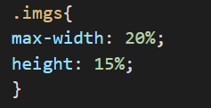
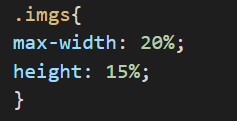
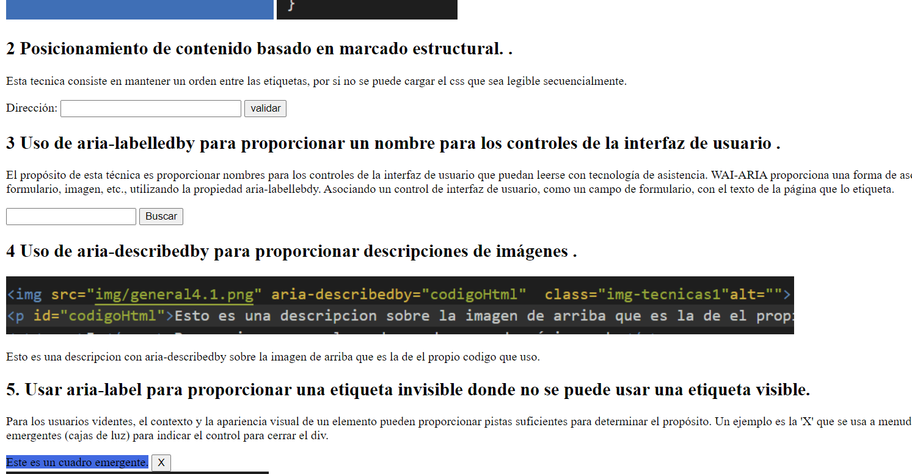
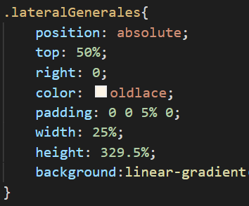

Tecnicas CSS
5 técnicas CSS:
1 Uso de CSS de ancho y alto máximo para ajustar las imágenes. .
Para ajustar las imagenes usamos width y height en la hoja de estilos css
 

2 Posicionamiento de contenido basado en marcado estructural. .
Esta tecnica consiste en mantener un orden entre las etiquetas, por si no se puede cargar el css que sea legible secuencialmente.
3 Usar valores porcentuales en CSS para tamaños de contenedores. .
El propósito de esta técnica consiste en dar valores porcentuales para que la pagina sea responsiva.
